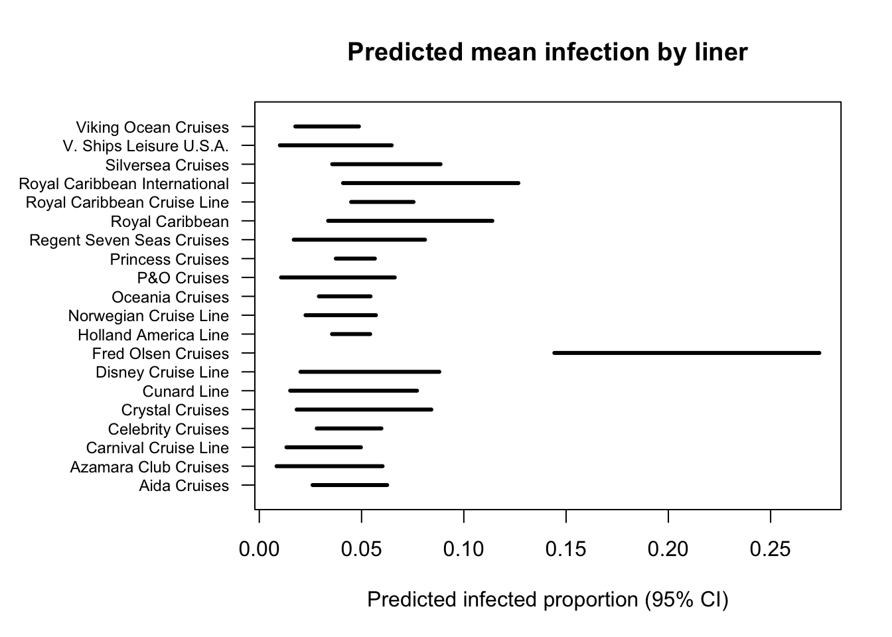

5 Day 5
5.1 Review
- Documentation/commenting code
# mtcars base R dataset
data = mtcars
y = data$mpg # mpg
x1 = data$hp # horsepower
x2 = data$wt # weight
# linear model predicting mpg with horsepower
m1 = lm(y ~ x1)
# predict mpg with weight
m2 = lm(y ~ x2)
# predict mpg with both
m3 = lm(y ~ x1 + x2)
# coefficients for each model
coef(m1)
coef(m2)
coef(m3)- Helper functions
library(dplyr) # tidyverse data wrangling
# function to calculate means for x based on strata
strata_means = function(data,strata,x){
out = data %>%
# group by strata
group_by(.data[[strata]]) %>%
# calculate mean of x per strata
summarise(xbar = mean(.data[[x]]))
# rename columns
colnames(out) = c(strata,x)
return(out) # return dataframe of means
}
# run function
strata_means(data,"vs","mpg")Explanatory code
- Objects/elements/function are named in ways that don’t require comments
Naming conventions
camelCase
snake_case
PascalCase
kebab-case
UPPER_CASE
S.case (common in R)
- Error catching
# function to calculate means for x based on strata
strata_means = function(data,strata,x){
# error catch for non-numeric inputs
if(is.numeric(data[[x]]) == FALSE){
cat("Error: Variable input to be averaged is non-numeric.", "\n",
"Please check str(data[[x]]) and confirm.", "\n",
"Change to as.numeric(data[[x]]) if this is intended.")
}
else{
out = data %>%
# group by strata
group_by(.data[[strata]]) %>%
# calculate mean of x per strata
summarise(xbar = mean(.data[[x]]))
# rename columns
colnames(out) = c(strata,x)
return(out) # return dataframe of means
}
}
# run function
data$mpg = as.character(data$mpg)
strata_means(data,"vs","mpg")## Error: Variable input to be averaged is non-numeric.
## Please check str(data[[x]]) and confirm.
## Change to as.numeric(data[[x]]) if this is intended.- Data types
# scalars/variables
a = 5
a
# vectors
x = c(1,2,3)
x
# matrices
A = matrix(c(x,x-1,x+3),3,3,T)
A
# data frame
df = data.frame(fruit = c("Apple", "Banana", "Orange"),
ID = c(111,112,113),
Count = c(5,12,2))
df
# list
ls = list(x = x, A = A, df = df)
ls- Data elements
# access vector elements by position
x[1]
x[3]
# matrix elements: [row,column]
A
A[3,1]
# dataframe$column or dataframe[["column"]]
df$fruit
df[["fruit"]]
# list[[element]]
ls[[2]]
ls[[2]][3,1]- Data actions
# change the elements of a dataframe column
df$ID = c(1,2,3)
df$ID
rownames(df) = c("R1","R2","R3") # rename rows
colnames(df) = c("C1","C2","C3") # rename columns
df- Booleans
df$C1
df$C1 == "Apple" # print true where apple is present
df$C1 != "Apple" # print true when not apple- Extended print statements
# single line
cat("The mean of column 3 is:", mean(df$C3), "\n")
# multiple lines using "\n" for breaks
cat("The variance of column 3 is:", var(df$C3), "\n",
"The standard deviation of column 3 is:", sd(df$C3))- Removing NA values
df[1,1] = NA
na.omit(df) # removes all rows with NAs
df[,colSums(is.na(df)) == 0] # remove all columns with NAs- Replacing NA values
- For loops (Note on C programming)
# mtcars data
data = mtcars
# split by vs
splt = split(mtcars,mtcars$vs)
# empty vector
out = c()
# "for each element of the list"
for(i in 1:length(splt)){
# fill the vector with the mean mpg
# of each list element
out[i] = mean(splt[[i]]$mpg)
}
out # matches the strata_means() output- Concatenate
# a way to push extended strings onto objects
names(out) = paste0("vs = ", names(splt), sep = " ")
out # labels better match strata_means()- Libraries/packages
# install.packages("dplyr")
library(dplyr) # we've seen this a lot
# install.packages("readxl")
library(readxl) # excel files can't be read by default in R
# install.packages("nlme")
library(nlme) # generalized least squares
# important for next weekR Markdown
“Graves” ” ` ”
{r}, {r, echo=FALSE, message=FALSE, warning=FALSE}
{fig.align=‘center’}
HTML vs PDF
Headers
# First level
## Second level
### Third level
- Bullet
* Bullet
+ Bullet
1. Numbered bullet
a. Letter bullet
> Quote block- Quarto vs. Rmd
LaTeX
$vs$$vs\[\beta,\gamma\bar{},\hat{}\begin{array},\begin{bmatrix},\begin{aligned}\vspace{3mm},\newpage
- Mean and standard deviation
\[ \bar{x} = \frac{1}{n} \sum_{i=1}^n x_i \qquad\qquad s = \sqrt{s^2} = \sqrt{\frac{1}{n-1} \sum_{i=1}(x_i - \bar{x})^2} \]
## [1] 4.6204## [1] 0.1622261## [1] 0.402773- Quantiles/Quartiles
\[ \begin{array}{|c|c|c|c|c|} \hline \text{Min} & \text{Q}_1 & \text{Median} & \text{Q}_3 & \text{Max} \\ \hline 0^{th} & 25^{th} & 50^{th} & 75^{th} & 100^{th} \\ \hline \end{array} \]
## 0% 25% 50% 75% 100%
## 4.0 4.3 4.6 4.9 6.4## [1] 4.0 4.3 4.6 4.9 6.4- Histograms and Boxplots
# base R histogram
hist(quakes$mag,
xlab = "Magnitude", # x axis label
main = "Earthquakes off Fiji", # title
col = "white") # bar color
hist(quakes$mag, # data
xlab = "Magnitude",
main = "Earthquakes off Fiji",
col = "white")
abline(v = mean(quakes$mag), # vertical mean line
lty = 2, # line type (dashed)
lwd = 2, # line width
col = "gold") # line color
# margin control
par(mar = c(3,1,1,1)) # bottom, left, top, right
# base R boxplot
boxplot(quakes$mag,
horizontal = T, # set as horizontal (T = TRUE)
col = "white") # central box color
par(mar = c(3,1,1,1))
boxplot(quakes$mag,
horizontal = T,
col = "white")
abline(v = c(4,4.3,4.6,4.9,5.7), # vertical quantile lines
lty = 2,
lwd = 2,
# color palette
col = c("#FED976","#FEB24C","#FD8D3C","#E31A1C","#800026"))
text(c(4.1,4.24,4.5,4.82,5.5), # x position
c(0.9,1.15,0.9,1.15,0.9), # y position
c("Min","Q1","Med","Q3","Max"), # quantile labels
col = c("#FED976","#FEB24C","#FD8D3C","#E31A1C","#800026"))
- \(z\)-scores
\[ z = \frac{x - \bar{x}}{s} \]

- Normal distributions
\[ X \sim N(\mu,\sigma^2) \qquad\qquad \frac{X - \mu}{\sigma} = Z \sim N(0,1) \]
par(mar = c(4.5,4.5,1,1))
curve(dnorm(x), # standard normal density
xlim = c(-4,4), # x axis limits
lwd = 2,
xlab = "X",
ylab = "P(X=x)") # y axis label
# z score for a 5.5 magnitude earthquake
z_score = (5.5 - mean(quakes$mag))/sd(quakes$mag)
1 - pnorm(z_score) # 1 - z probability (same as z-table)## [1] 0.01448625- Scatterplots
# base R scatterplot
plot(quakes$stations,quakes$mag, # x then y
xlab = "Number of stations reporting", # x axis label
ylab = "Magnitude", # y axis label
main = "Earthquakes off Fiji", # title
pch = 20, # point shape
col = "#00000080") # point color
- Least squares regression
\[ y_i = \beta_0 + \beta_1 x_i + \epsilon_i \]
# predictor
x = quakes$stations
# response
y = quakes$mag
# base R linear model
m = lm(y ~ x)
coef(m) # coefficients## (Intercept) x
## 4.09726756 0.01565421plot(quakes$stations,quakes$mag,
xlab = "Number of stations reporting",
ylab = "Magnitude",
main = "Earthquakes off Fiji",
pch = 20,
col = "#00000080")
# add regression line
lines(sort(quakes$stations),sort(m$fitted.values),
lwd = 2,
col = "gold") # line color
- Confidence intervals
# 95% confidence interval
# mean magnitude
xbar_mag = mean(quakes$mag)
# standard deviation of magnitude
s_mag = sd(quakes$mag)
# sample size
n_mag = as.numeric(nrow(quakes))
# margin of error
moe_mag = 1.96*(s_mag/sqrt(n_mag))
xbar_mag - moe_mag # lower bound## [1] 4.595436## [1] 4.6204## [1] 4.645364
- Hypothesis tests
# schizophrenic reaction time data
schiz = data.frame(time = scan("data/schiz.txt",skip=5),
schizophrenia = c(rep("no",30*11),rep("yes",30*6)))
library(dplyr) # R data wrangling package
sstats = schiz %>%
# group by yes/no schiz
group_by(schizophrenia) %>%
# mean/var/sample size for yes/no strata
summarise(xbar = mean(time),
s2 = var(time),
n = n())
# print dataframe
sstats## # A tibble: 2 × 4
## schizophrenia xbar s2 n
## <chr> <dbl> <dbl> <int>
## 1 no 310. 4209. 330
## 2 yes 507. 69089. 180\[ \begin{aligned} \text{H}_0: \mu_1 - \mu_2 = 0 \\ \\ \text{H}_a: \mu_1 - \mu_2 < 0 \end{aligned} \]
\[ t^* = \frac{(\bar{x}_1 - \bar{x}_2) + (\mu_1 - \mu_2)}{\sqrt{(s_1^2/n_1) + (s_2^2/n_2)}} \]
# test statistics for independent difference in means
tstar = as.numeric((sstats[1,2] - sstats[2,2])/
sqrt((sstats[1,3]/sstats[1,4]) +
(sstats[2,3]/sstats[2,4])))
tstar## [1] -9.877136## [1] 6.114281e-19- Discrete expected value
\[ \mathbb{E}X = \sum_x x P(X=x) \]
Binomial distribution
Discrete, binary processes
Success/failure
\[ X \sim \text{Bin}(n,p) \qquad \qquad \mathbb{E}X = np \qquad \qquad \mathbb{V}X = np(1-p) \]
Poisson distribution
- Positive discrete counts
\[ X \sim \text{Pois}(\lambda) \qquad \qquad \mathbb{E}X = \mathbb{V}X = \lambda \]
Geometric distribution
- Number of trials to reach success
\[ X \sim \text{Geom}(p) \qquad \qquad \mathbb{E}X = 1/p \]
Hypergeometric distribution
Geometric distribution
Sampling without replacement
\[ X \sim \text{Hyper}(N,K,n) \qquad \qquad \mathbb{E}X = n \frac{K}{N} \]
- Continuous expected values
\[ \mathbb{E}X = \int_{\chi}x f_x(x) \]
Gamma distribution
- Positive continuous values
\[ X \sim \text{Gamma}(\alpha,\theta) \qquad \qquad \mathbb{E}X = \alpha \theta \qquad \qquad \mathbb{V}X = \alpha \theta^2 \]
Beta distribution
- Proportions/probabilities
\[ X \sim \text{Beta}(\alpha,\beta) \qquad \qquad \mathbb{E}X = \frac{\alpha}{\alpha + \beta} \qquad \qquad \mathbb{V}X = \frac{\alpha \beta}{(\alpha + \beta)^2 (\alpha + \beta + 1)} \]
Uniform distribution
Equi-probable events
Defined boundaries (a and b)
\[ X \sim \text{Unif}(a,b) \qquad \qquad \mathbb{E}X = \frac{1}{2}(b-a) \qquad \qquad \mathbb{V}X = \frac{1}{12}(b-a)^2 \]
Any questions?
5.2 Statistical Modeling
What is a model?
Scientific vs. Thought vs. Mathematical
Statistical?
Why do we use models?
Trend analysis
- What’s happening with total kjeldahl nitrogen in Kansas?

- Simple linear regression
\[ y_i = \beta_0 + \beta_1 t_i + \epsilon_i \]
\[ \epsilon_i \sim N(0, \sigma^2 \textbf{I}) \]
- Another way to write it:
\[ y_i \sim N(\mu,\sigma^2 \textbf{I}) \]
\[ \mu = \beta_0 + \beta_1 t_i \]
mod_df = data.frame(UOM = kslr_tkn$UOM,
Year = kslr_tkn$Year,
huc08 = kslr_tkn$huc08)
m1 = lm(UOM ~ Year, data = mod_df)
summary(m1)##
## Call:
## lm(formula = UOM ~ Year, data = mod_df)
##
## Residuals:
## Min 1Q Median 3Q Max
## -1.1020 -0.4490 -0.2046 0.1621 12.0753
##
## Coefficients:
## Estimate Std. Error t value Pr(>|t|)
## (Intercept) 44.898799 3.430303 13.09 <2e-16 ***
## Year -0.021873 0.001706 -12.82 <2e-16 ***
## ---
## Signif. codes: 0 '***' 0.001 '**' 0.01 '*' 0.05 '.' 0.1 ' ' 1
##
## Residual standard error: 0.8546 on 4761 degrees of freedom
## Multiple R-squared: 0.03338, Adjusted R-squared: 0.03318
## F-statistic: 164.4 on 1 and 4761 DF, p-value: < 2.2e-16or = order(mod_df$Year)
plot(mod_df$Year, mod_df$UOM,
col="#D1D1D180",
xlab = "Year",
ylab = "TKN (mg/L)")
lines(mod_df$Year[or], predict(m1, type="response")[or], lwd = 2, col = "#512885")
What about space?
- Add a “cluster effect”
\[ y_{ij} = \beta_0 + \beta_1 t_i + \beta_2 s_j \epsilon_{ij} \]
\[ \epsilon_{ij} \sim N(0, \sigma^2 \textbf{I}) \]
\(s_j\) pertains to the “HUC” levels
Think of it as a categorical predictor
Goes to \(0\) based on which HUC is present
##
## Call:
## lm(formula = UOM ~ Year + as.factor(huc08), data = mod_df)
##
## Residuals:
## Min 1Q Median 3Q Max
## -1.4040 -0.4201 -0.1632 0.1809 11.8143
##
## Coefficients:
## Estimate Std. Error t value Pr(>|t|)
## (Intercept) 44.617022 3.305166 13.499 < 2e-16 ***
## Year -0.021749 0.001642 -13.242 < 2e-16 ***
## as.factor(huc08)10250017 0.368838 0.072993 5.053 4.51e-07 ***
## as.factor(huc08)10270101 -0.187518 0.075699 -2.477 0.013278 *
## as.factor(huc08)10270102 -0.201293 0.068389 -2.943 0.003263 **
## as.factor(huc08)10270103 -0.214657 0.081542 -2.632 0.008504 **
## as.factor(huc08)10270104 0.004271 0.068111 0.063 0.950001
## as.factor(huc08)10270205 0.430969 0.074249 5.804 6.88e-09 ***
## as.factor(huc08)10270207 0.292476 0.077379 3.780 0.000159 ***
## ---
## Signif. codes: 0 '***' 0.001 '**' 0.01 '*' 0.05 '.' 0.1 ' ' 1
##
## Residual standard error: 0.8216 on 4754 degrees of freedom
## Multiple R-squared: 0.108, Adjusted R-squared: 0.1065
## F-statistic: 71.98 on 8 and 4754 DF, p-value: < 2.2e-16
- Where are we headed?
5.3 Stringing sentences
Correlative inference
- Which cruise liner should you avoid?
par(mar = c(5, 9, 4, 2))
boxplot(cruise$infected_proportion ~ cruise$liner,
xlab = "Proportion infected",
ylab = "",
main = "Norovirus outbreaks on cruise liners",
horizontal = TRUE,
las = 1,
cex.axis = 0.7,
col = "#D1D1D190")
\[ \left[y|\alpha, \beta \right] \equiv \text{Beta}(\alpha,\beta) \]
\[ \alpha = \mu \phi \qquad \beta = (1 - \mu) \phi \qquad g(\mu) = \textbf{X}^\prime \boldsymbol{\beta} \]

- Seems like Fred Olsen is a bad idea…
| Liner | Frequency |
|---|---|
| Aida Cruises | 3 |
| Azamara Club Cruises | 1 |
| Carnival Cruise Line | 2 |
| Celebrity Cruises | 4 |
| Crystal Cruises | 1 |
| Cunard Line | 1 |
| Disney Cruise Line | 1 |
| Fred Olsen Cruises | 1 |
| Holland America Line | 12 |
| Norwegian Cruise Line | 3 |
5.4 Telling stories
What just happened?
Are these results a problem?
- Is the context behind them bad?
What is data?
What is a statistic?
What is it for?
What are the limitations of statistics? Of science?
A major step in telling a story
- Having an idea for the plot
What makes a good plot?
How do scientific inquiries happen?
By accident (Grokking)
By madness (Game theory)
Taking risks (Chemotherapy)
Via spite (Scale-free networks)
“Things breaking” (?)
Is Fred Olsen a potent vector of norovirus?
- Are Carnival cruises really that safe of an option?
bbreg = function(){
# process model
for(i in 1:n){
y[i] ~ dbeta(alpha[i], beta[i])
# mean/precision parameterization
alpha[i] <- mu[i] * phi
beta[i] <- (1-mu[i]) * phi
# logit link function
logit(mu[i]) <- a + b*x[i]
}
# priors
phi ~ dgamma(1,.01)
a ~ dnorm(0,.1)
b ~ dnorm(0,.1)
}
# setting up jags data
jags_dat = list(y = cruise$infected_proportion,
x = as.integer(factor(cruise$liner)),
n = nrow(cruise))
# initial proposal values
inits = list(a = .01, b = .01, phi = 1)
# fitting the model
bbreg_mcmc = jags.fit(jags_dat,c("a","b","phi"),
bbreg,inits,n.adapt=5000,
n.update=5000,n.iter=100000,
thin=1,n.chains=1)# reproducibility seed
set.seed(73)
# number of posterior samples
K = nrow(samp)
# set to carnival and fred olsen
x_pred = c(3,8)
a_post = samp[,1] # intercept post
b_post = samp[,2] # effect par post
phi_post = samp[,3] # precision par post
# vectorized posterior logit(mu) predictions
eta_post = outer(a_post, x_pred,
FUN = function(ai, x) ai) +
outer(b_post, x_pred)
# "un-do" the link function
mu_post = invlogit(eta_post)
# alpha posterior predictions
alpha_post = mu_post * phi_post
# beta posterior predictions
beta_post = (1 - mu_post) * phi_post
# posterior predictions of y
y_post = matrix(rbeta(length(alpha_post),
alpha_post, beta_post),
nrow = K, ncol = length(x_pred))


Supplemental material
Project proposal samples
STAT 341 dictionary
Varying R resources
Extra reading
R for Data Science
Linear Models in R
Assignment 2